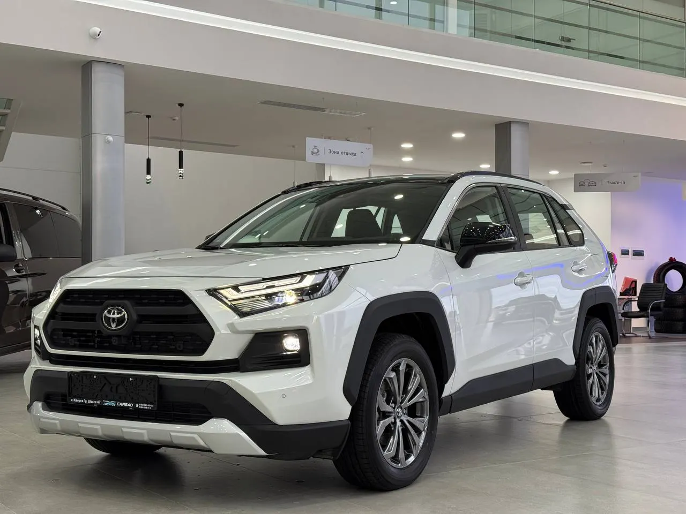
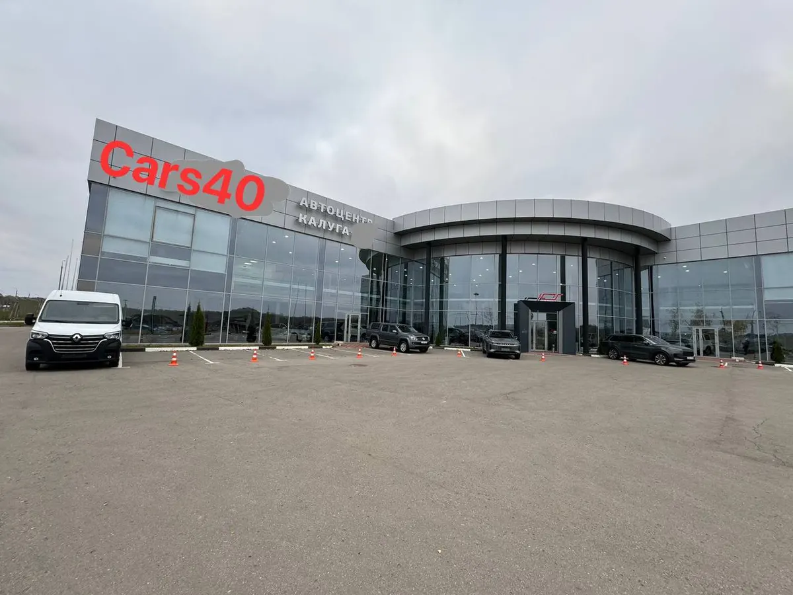
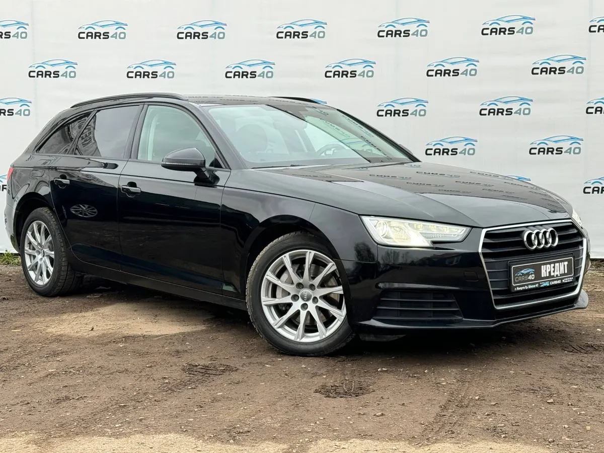

Выкуп · комиссия · трейд-ин
Выкуп и комиссионная продажа авто в Калуге
Назовите марку, год и пробег – оценим машину и предложим выкуп сразу или продажу на комиссии. Берём и битые, и неисправные.
- Выкуп, комиссия и трейд-ин в одном салоне
- Берём битые и технически неисправные
- 4,6 на Яндекс Картах, 14 отзывов

Как считаем – по осмотру
Сумму называют после осмотра машины: она зависит от марки, года, пробега и состояния. Что можно сдать и на каких условиях – ниже.
Продать машину
- Выкуп автомобиляиномарки, отечественные, грузовые, мото- и спецтехникапо осмотру
- Выкуп битых и неисправныхпосле ДТП и с технической неисправностьюпо осмотру
- Комиссионная продажамашина стоит в салоне, продаётся за процент от суммы% от продажи
Обмен и оформление
- Трейд-инстарую машину принимают при покупке другойпо оценке
- Автокредит на покупкубез первоначального взноса, условия – у менеджерауточнить
- Электронный ПТС и постановка на учётпомогают оформитьуточнить
Ставку комиссии и условия выкупа называет менеджер до подписания договора. Цифр заранее не обещаем.
Как проходит сделка
- 01
Написали или позвонили
Марка, год, пробег и пара фото – этого хватает для первого разговора.
- 02
Осмотр и оценка
Машину смотрят в салоне на Зерновой, 46 и называют цену.
- 03
Выбор: выкуп или комиссия
Нужны деньги сейчас – выкуп. Можно подождать ради цены – комиссия или трейд-ин.
- 04
Оформление
Менеджер ведёт сделку и документы от начала до конца.


Что важно знать
Выкуп или комиссия – решаете вы
Клиент пишет, что на комиссии получил на 22% больше, чем предлагали точки выкупа. Это его случай, у вас сумма будет своя.
Берём и битые машины
На Яндекс Картах указан выкуп битых и технически неисправных авто.
Любая техника
Иномарки, отечественные, грузовые, мототехника и спецтехника – так отмечено на карточке салона.
Обмен на другую машину
Трейд-ин: старую машину принимают в зачёт при покупке из салона.
Отзывы с Яндекс.Карт
«Продали за считанные дни, на руки получили на 22% больше, чем предлагали разные точки выкупа.»
Мария Бажина · 3 ноября
«Обратились с мужем по поводу комиссионной продажи нашего авто, машину оценили по достоинству, выше рынка) Продажа состоялась очень оперативно!»
марина ф. · 17 октября
«Ребята быстро оценили авто, по хорошей цене. Рекомендую данное место.»
Дмитрий Королев · 3 июня
Отзывы с карточки на Яндекс.Картах, без правок.
Частые вопросы
Что выгоднее: выкуп или комиссия?
Выкуп – когда нужны деньги и сделка сразу. Комиссия – когда можно подождать покупателя: машина стоит в салоне и продаётся за процент от суммы. Что подойдёт вам, подскажет менеджер после осмотра.
Берёте битые и неисправные?
Да, на Яндекс Картах отмечен выкуп битых и технически неисправных авто. Цену назовут по осмотру.
Сколько заплатите за мою машину?
Сумму сайт не называет: она зависит от марки, года, пробега и состояния. Пришлите данные и фото – ответят после оценки.
Какие машины берёте?
Иномарки, отечественные, грузовые, мототехнику и спецтехнику – как указано на карточке салона.
Продаёте автомобили тоже?
Да: салон продаёт авто с пробегом в наличии и привозит машины на заказ из Кореи, Китая и Европы.
Когда работаете?
Ежедневно с 10:00 до 18:00. Вечером оставьте заявку в WhatsApp – ответят в рабочее время.
Напишите марку, год и пробег – оценим машину
- Адрес
- Зерновая улица, 46, Калуга
- Часы
- ежедневно 10:00-18:00